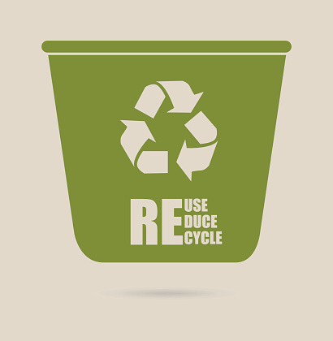
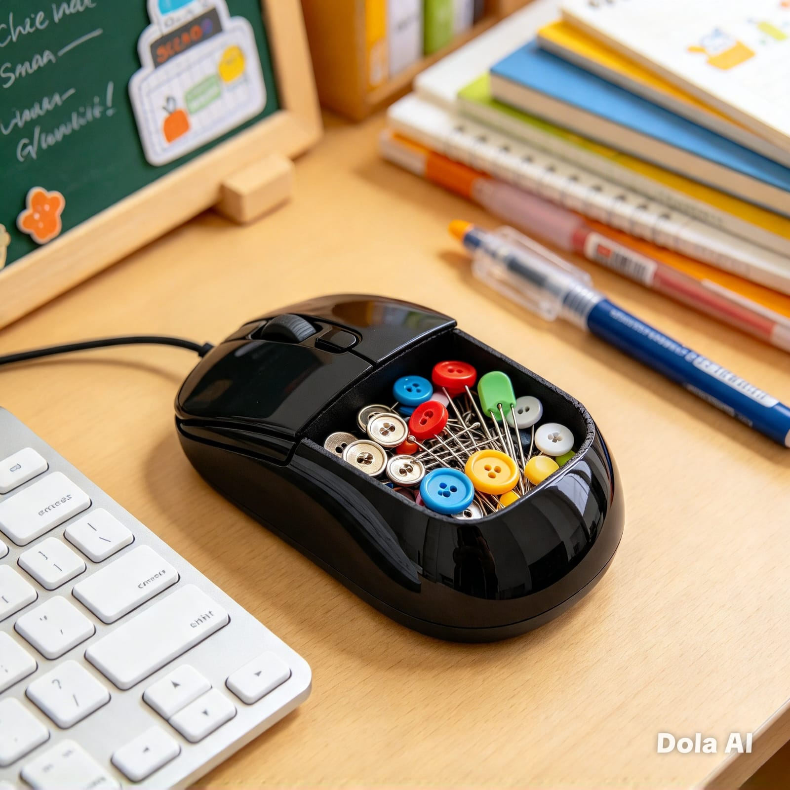

GERAKAN PEDULI LINGKUNGAN
Sampah Menjadi
Barang Berharga
Ubah sampah menjadi sesuatu yang bernilai. Mulai langkah kecil untuk lingkungan yang lebih bersih dan masa depan yang lebih hijau.
Mulai Jelajahi →
TENTANG KAMI
Jangan Buang Sampah,
Ubah Jadi Berharga!
Judul “Sampah Menjadi Barang Berharga” bertujuan mengubah pandangan masyarakat terhadap sampah melalui kreativitas dan inovasi. Pengolahan limbah dilakukan untuk mengurangi dampak negatif terhadap lingkungan dan kesehatan melalui prinsip 3R, yaitu Reduce (mengurangi), Reuse (menggunakan kembali), dan Recycle (mendaur ulang). Penerapan prinsip ini dapat mengurangi sampah, menjaga lingkungan, serta menghasilkan barang bernilai guna dan ekonomis.
Pelajari SelengkapnyaProduk Kami
Berbagai produk kreatif yang dibuat dari sampah menjadi barang yang berharga.

Hiasan Meja dari Keyboard Bekas.
Hiasan meja ini dibuat dari tombol keyboard bekas yang disusun berbentuk bola dan dipasang pada dudukan sehingga menjadi hiasan unik dan menarik.
Pelajari Selengkapnya
Gantungan kunci dari PCB
Gantungan kunci ini dibuat dari limbah papan sirkuit (PCB) yang dipadukan dengan resin transparan dan bingkai logam, sehingga menjadi aksesori unik, fungsional, dan bernilai seni.
Pelajari Selengkapnya
Wadah dari Cangkang Mouse
Wadah kecil dari cangkang mouse bekas merupakan kerajinan daur ulang limbah elektronik yang dimanfaatkan sebagai organizer untuk menyimpan barang-barang kecil, seperti kancing, jarum, peniti, dan alat tulis.
Pelajari Selengkapnya
Tempat Alat Tulis dari Kardus Bekas.
Tempat alat tulis dari kardus merupakan kerajinan daur ulang yang berguna untuk menyimpan perlengkapan belajar sekaligus mengurangi sampah.
Pelajari Selengkapnya
Pot Tanaman dari Botol Plastik
Pot tanaman dari botol plastik bekas merupakan kerajinan daur ulang yang dihias menarik dan digunakan untuk menanam bunga atau tanaman hias.
Pelajari Selengkapnya
Hiasan Jam Dinding
Jam dinding hias merupakan kerajinan yang berfungsi sebagai penunjuk waktu sekaligus dekorasi ruangan dengan hiasan warna-warni dan bunga.
Pelajari SelengkapnyaPelajaran
Pembelajaran kolaboratif dari proyek Sampah Menjadi Barang Berharga.
Matematika
Tampilkan perhitungan
Aprilia Hidayatulila

- Permisalan x = 1 pot bunga kelinci
- Permodelan x + 2y = 155.000
- - Metode eliminasi mencari nilai x
- - Metode subtitusi x + 2y=155.000
- Jadi, harga 1 pot bunga kelinci adalah Rp 57.500, dan harga 1 gantungan kunci keyboard adalah Rp 48.750
y = 1 gantungan kunci keyboard
3x + 2y = 270.000
3x + 2y = 270.000
x + 2y =155.000
______________ _
2x = 115.000
x=57.500
57.500 + 2y = 155.000
2y =155.000 - 57.500
2y =97.500
y = 48.750
As Syifa Azzahra Putri

- Permisalan x = 1 kipas portable
- Permodelan 2x +3y = 154.000
- - Metode eliminasi mencari nilai x
- - Metode subtitusi x + 2y=90.000
- Jadi, harga 1 kipas portabl adalah Rp 38.000, dan harga 1 lampu hias adalah Rp 26.000
y = 1 lampu hias
x + 2y = 90.000
2x + 3y = 154.000|x2
x + 2y =90.000 |x3
4x + 6y = 308.000
3x + 6y = 270.000
______________ _
x =38.000
(38.000) + 2y = 90.000
2y =90.000-38.000
2y =52.000
y =52.000 ÷ 2
y = 26.000
Della Ayu Nur Syafitri

- Permisalan x = 1 Bingkai foto dari keyboard
- Permodelan 2x + 3y = 325.000
- - Metode eliminasi mencari nilai x
- - Metode subtitusi x + 2y= 210.00
- Jadi, harga 1 Bingkai foto dari keyboard adalah Rp 20.000, dan harga 1 lampu led dari keyboard bekas adalah Rp 95.000
y = 1 lampu led dari keyboard bekas
x + 2y = 210.000
2x + 3y = 325.000 |x2
x + 2y = 210.000|x3
4x + 6y = 650.000
3x + 6y = 630.000
______________ _
X = 20.000
20.000 + 2y = 210.000
2y= 210.000 - 20.000
2y= 190.000
y=95.000
Bahasa Indonesia
Baca laporan tugas
Laporan Aprilia Hidayatulila
Barang bekas merupakan benda yang sudah tidak digunakan lagi, tetapi masih dapat dimanfaatkan menjadi sesuatu yang berguna. Salah satu contohnya adalah keyboard komputer bekas yang dapat diolah menjadi kerajinan tangan berupa bola dunia. Produk ini dibuat dengan memanfaatkan bahan yang sudah tidak terpakai sehingga dapat mengurangi sampah sekaligus menghasilkan hiasan yang menarik.
Bola dunia dari keyboard bekas merupakan kerajinan berbentuk globe yang menggunakan styrofoam sebagai bahan dasar dan tombol keyboard bekas sebagai bahan hiasan. Bahan yang digunakan dalam pembuatan produk ini adalah keyboard bekas, styrofoam, lem, dan bahan pendukung lainnya. Keyboard bekas dimanfaatkan dengan mengambil bagian tombol-tombolnya, sedangkan styrofoam digunakan untuk membentuk dasar bola dunia.
Proses pembuatan bola dunia ini dilakukan dengan membentuk styrofoam menjadi bulat seperti globe. Setelah itu, tombol-tombol keyboard bekas disusun dan ditempelkan pada permukaan styrofoam hingga membentuk tampilan bola dunia yang menarik. Produk ini dibuat dengan menggabungkan kreativitas dan pemanfaatan barang bekas sehingga menghasilkan kerajinan yang memiliki bentuk unik.
Bola dunia dari keyboard bekas memiliki manfaat sebagai hiasan meja, pajangan, sekaligus media pengenalan bentuk bumi. Selain itu, pembuatan produk ini dapat melatih kreativitas dan mengajarkan pentingnya mengolah barang bekas agar tidak langsung dibuang. Dengan adanya kerajinan ini, keyboard yang sudah tidak digunakan dapat berubah menjadi barang yang memiliki nilai guna dan nilai keindahan.
Laporan As Syifa Azzahra Putri
Limbah keyboard merupakan salah satu jenis sampah elektronik yang berasal dari perangkat komputer yang sudah tidak digunakan atau mengalami kerusakan. Keyboard terdiri atas berbagai komponen, seperti tombol, rangka plastik, kabel, dan bagian elektronik. Limbah keyboard dapat dimanfaatkan kembali menjadi barang kerajinan yang memiliki nilai estetika dan nilai guna.
Berdasarkan produk yang kami buat, terlihat sebuah kerajinan yang dibuat dari limbah keyboard bekas. Kerajinan tersebut memiliki bentuk menyerupai pohon dengan bagian atas berbentuk bulat. Bagian atas kerajinan tersusun dari berbagai tombol keyboard berwarna hitam, abu-abu, dan putih. Tombol-tombol tersebut memiliki huruf, angka, serta simbol yang masih terlihat. Susunan tombol dibuat secara rapat sehingga membentuk permukaan menyerupai bola. Bagian bawah kerajinan menggunakan komponen elektronik sebagai penyangga. Terdapat rangkaian kabel dan bagian-bagian kecil yang menghubungkan bentuk bulat dengan alasnya. Kerajinan ini menunjukkan bahwa tombol keyboard yang sudah tidak terpakai dapat disusun menjadi bentuk yang menarik.
Kerajinan dari limbah keyboard memiliki berbagai manfaat. Salah satunya adalah mengurangi jumlah sampah elektronik yang dapat mencemari lingkungan. Selain itu, pemanfaatan limbah keyboard dapat meningkatkan kreativitas dan keterampilan dalam membuat kerajinan. Kerajinan ini juga dapat digunakan sebagai hiasan ruangan, pajangan, atau contoh pemanfaatan barang bekas. Dengan pengolahan yang tepat, limbah keyboard yang awalnya tidak memiliki nilai guna dapat menjadi barang yang menarik dan bernilai ekonomis.
Limbah keyboard dapat dimanfaatkan menjadi kerajinan yang menarik dan bermanfaat. Pengolahan limbah keyboard merupakan salah satu cara untuk mengurangi pencemaran lingkungan sekaligus meningkatkan kreativitas. Oleh karena itu, pemanfaatan limbah elektronik perlu dikembangkan agar barang yang sudah tidak digunakan dapat memiliki nilai tambah.
Laporan Della Ayu Nur Syafitri
Hiasan meja dari keyboard bekas adalah kerajinan yang memanfaatkan keyboard rusak menjadi hiasan yang menarik. Keyboard bekas yang biasanya dibuang, kini bisa diubah menjadi barang yang berguna dan bernilai jual. Hiasan ini terbuat dari tombol-tombol keyboard atau keycaps yang berwarna hitam dan putih. Tombol tersebut ditempelkan pada rangka yang terbuat dari kardus atau kaleng bekas menggunakan lem tembak. Alat yang digunakan cukup sederhana, yaitu gunting, cutter, dan lem tembak. Bentuk hiasannya bermacam-macam, seperti tempat pensil, pot bunga mini, dan bingkai foto.Manfaat dari kerajinan ini adalah dapat mengurangi sampah elektronik, melatih kreativitas, dan dapat dijual sehingga menghasilkan uang. Jadi, hiasan meja dari keyboard bekas sangat bermanfaat untuk menjaga lingkungan dan melatih keterampilan.
Bahasa Inggris
Baca laporan tugas
Aprilia Hidayatulila
How to Make a Globe from Used Keyboard Keys
A globe made from used keyboard keys is a creative craft made from electronic waste. This craft uses old keyboard buttons and other unused computer parts to create a unique decorative object. It is also a good way to recycle electronic waste and protect the environment.
First, prepare an old keyboard and remove all the keys carefully. Next, clean the keys so they are ready to be used. After that, prepare a round ball as the main structure. Then, attach the keyboard keys one by one to the surface of the ball using strong glue. Make sure the keys are arranged neatly and cover the entire surface. Finally, attach the ball to a stand so it can stand properly.
In conclusion, making a globe from used keyboard keys is an interesting way to recycle old electronic materials. Besides being creative, this activity helps reduce electronic waste and teaches us to reuse unused objects..
As Syifa Azzahra Putri
A Decorative Table Clock Made From recycled keyboard keys
A decorative table clock made from recycled keyboard keys is a creative handicraft produced by reusing unused computer keyboard buttons and electronic waste. This product combines creativity, functionality, and environmental awareness. It transforms waste materials into a useful and attractive decoration.
First, used keyboard keys are collected and cleaned to remove dust and dirt. Then, the keys are arranged and attached to a round base to form the shape of a clock. A clock mechanism is installed in the middle, allowing the clock to function properly. After that, the clock is connected to a supporting base to make it stand firmly on a table.
The recycled keyboard keys create a unique appearance because each key has different letters, numbers, and symbols. A computer mouse can also be placed beside the clock as an additional decoration.
In conclusion, making a decorative table clock from recycled keyboard keys is an innovative way to apply the 3R principle, especially recycling. Besides reducing electronic waste, this product creates a useful, unique, and valuable item that can be used as a room decoration.
Della Ayu Nur Syafitri
Table Decoration From Used Keyboard
Table decoration from used keyboard is a handicraft that uses a broken keyboard to make a beautiful decoration. A used keyboard that is usually thrown away can be changed into a useful and valuableTable decoration from used keyboard is a handicraft that uses a broken keyboard to make a beautiful decoration. A used keyboard that is usually thrown away can be changed into a useful and valuable product.
This decoration is made from keyboard buttons or keycaps. The buttons are black and white and have letters and numbers on them. The buttons are glued on a frame made from used cardboard or used cans using a glue gun. The tools used are very simple, such as scissors, cutter, and glue gun.
The shape of this decoration is varied, such as a pencil holder, a mini flower pot, and a photo frame. The buttons are arranged neatly to cover all parts of the frame, so it looks unique and interesting.
This handicraft has many benefits. It can reduce electronic waste, train creativity, and can be sold to get money. So, table decoration from used keyboard is very useful to protect the environment and to train our skills.
Mulai dari Sampah, Ciptakan Perubahan!
Hiasan meja dari keyboard bekas merupakan penerapan prinsip Recycle yang mengurangi sampah elektronik dan menghasilkan barang bernilai jual.Proyek ini menginspirasi,melatih kreativitas,ketelitian ,dan kepedulian terhadap lingkungan.Jangan membuang barang bekas sembarangan,tetapi memanfaatkan menjadi produk kreatif dan berniali.Biasakan memilah dan mengolah sampah menjadi kerajinan yang bermanfaat serta berpotensi menjadi peluang usaha dengan memperhatikan keselamatan.
Mulai SekarangKontak Kami
Silakan hubungi kami jika ada pertanyaan atau saran.
Kirim Pesan
Informasi Sekolah
Alamat Sekolah
Jl. Darun Na'im, Karangduren, Tengaran, Kabupaten Semarang
Youtube
@XSATATV
Tiktok
smkn1tengaran_bisa
Instagram
smkn1tengaran_bisa